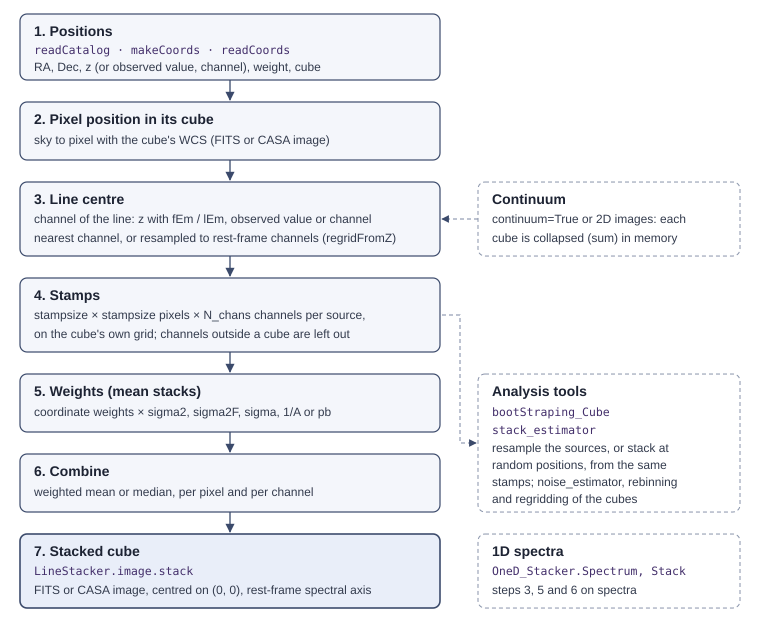

How stacking works¶
Stacking averages the data of many sources, each at its own position and redshift, so that a signal too faint to be seen in any single source shows up in the average. Noise that is independent between sources goes down as 1/√N for N sources of similar depth.


Stacking in data cubes¶
For every source, LineStacker.image.stack():
Takes its position, from a catalogue, Python arrays or coordinate files (Stacking positions): right ascension, declination, a spectral value (the redshift, by default) and a weight, and the cube the source lies in.
Converts the position to pixels with the WCS of that cube. Cubes can be FITS files or CASA images, in any axis order.
Finds the channel of its line. With
spectralMethod='z'(the default) the line is at the rest frequencyfEm(or rest wavelengthlEm) redshifted to the source’s z;'obsSpec'gives the observed frequency, wavelength or velocity directly, and'channel'the channel. The stack uses the nearest channel, one cube channel per stack channel, as LineStacker always did. WithregridFromZ=Trueeach spectrum is instead resampled so that all sources share the same rest-frame channel width, which corrects the narrowing of the observed lines with redshift.Cuts a stamp of
stampsize×stampsizepixels andN_chanschannels, centred on the source and on its line. Stamps are cut on the cube’s own pixel grid: LineStacker does not reproject cubes. Channels that fall outside a source’s cube are left out of the stack for that source.Weights it (mean stacks): the weight of the coordinate, times the weighting asked for: the inverse noise variance of the stamp (
'sigma2', or per channel'sigma2F'), the inverse noise ('sigma'), one over the line amplitude ('1/A'), or the squared primary-beam response ('pb').Combines all stamps, pixel by pixel and channel by channel: a weighted mean, or a median.
The stacked cube is written as a FITS file or a CASA image, with sky axes
as offsets from the stacked position and, for spectralMethod='z', a
spectral axis in the rest frame: the line at fEm. See
Stacking cubes for the options and for what the output header
contains.
For continuum stacking (continuum=True), steps 3 and 4 work on images:
cubes are collapsed over their channels in memory (a sum by default), and
images without a spectral axis are used as they are.
Stacking spectra¶
LineStacker.OneD_Stacker.Stack() does steps 3, 5 and 6 on spectra that
were already extracted: every spectrum is a
LineStacker.OneD_Stacker.Spectrum that knows where its line is
(a channel, a velocity, a frequency, a redshift, or a Gaussian fit), and the
spectra are aligned on their lines and averaged. See
Stacking spectra.
Testing a stack¶
A stacked line can be dominated by a few bright sources, or be an artefact of the noise. The analysis tools (Analysis tools) resample the stacked sources (bootstrapping), find the sources that contribute most (subsampling), and stack random positions around the sources to measure how large a stacked signal noise alone gives.